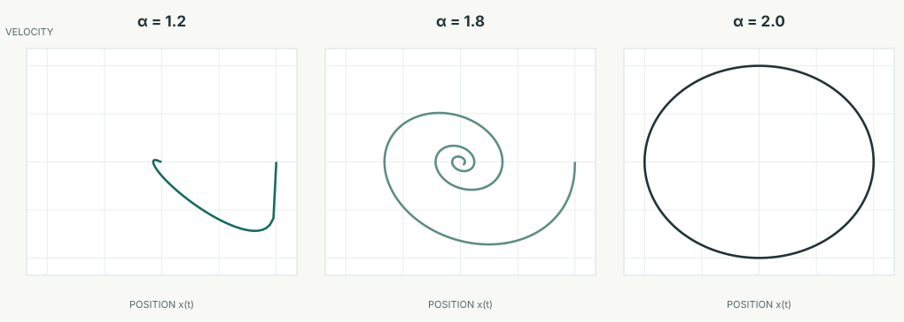
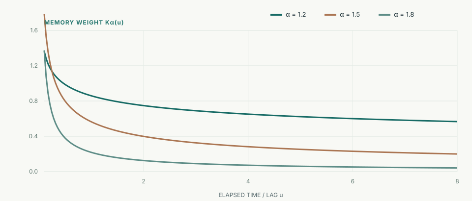

I work with mathematical models, numerical methods and financial data. My recent work includes industrial flow modelling, a thesis on fractional differential equations, and empirical tests of asset-pricing models.
During a six-month project, I adapted published models to industrial operating conditions, studied uncertainty with Monte Carlo simulations and compared predictions with measurements.
Our group compared CAPM and Fama–French models using industry portfolio returns. We examined model fit, pricing errors, robust inference and moment conditions.
Econometrics, factor models, out-of-sample testing and reproducible Python research. I keep notes on papers, methods and ongoing projects on the Exploring & Reading page.
Projects
Selected work in applied mathematical modelling, empirical finance and numerical research. Detailed figures and code are included where a public reproduction is available.
Industrial research · Six-month project
Two-phase flow in industrial pipelines
After a liquid product moves through an industrial pipeline, some can remain in the pipe. Compressed air can displace much of this liquid, but residual product and rinse water still need to be accounted for.
I investigated published models of this process, adapted mathematical relationships to operating conditions, and studied uncertainty with numerical methods and Monte Carlo simulations. I also compared calculations with available measurements during the original industrial project.
Four stages connect liquid displacement, residual inventory, rinsing and water removal.
01 / 04
01
MOVING-COLUMN DYNAMICS
Displacing the liquid column
The pipe initially contains liquid product. Compressed air enters behind it and drives the product towards the outlet as the full liquid column shortens.
Key question: How fast does the liquid leave, and what changes when the air pressure falls?
MODEL
A one-dimensional momentum and volume balance couples outlet flow to the moving column. Pressure can be constant or decline as an isolated gas volume expands.
The moving interface responds to outlet flow Q, pipe area A and the assumed retained-liquid fraction β.
BOUNDARY
Uniform-pipe demonstrations; the segmented resistance example is not yet coupled to this transient model.
02
VOLUME CONSERVATION
Column-to-film transition
After the main displacement, the pipe can still contain a shorter full liquid column and liquid left behind the moving interface.
Key question: How much is discharged, how much remains as a column, and how much is left behind?
MODEL
A control-volume calculation tracks the partition into discharged liquid, remaining column and residual inventory. A separate film-decay example explores assumed removal rates.
The initial volume equals the remaining full column plus discharged and left-behind liquid.
BOUNDARY
No validated annular-film transport, Cioncolini–Thome implementation or industrial film-removal calibration is claimed.
03
MULTI-INVENTORY BALANCES
Water and product transport
Water is introduced to carry away residual product. Water and product must be followed separately because they can remain inside or leave the pipe.
Key question: Where does the supplied water go, and how does residual product move?
MODEL
A simplified three-compartment example tracks introduced water, mobile product, remaining wall product and discharge with explicit conservation checks.
Water in the pipe grows with inflow and falls with discharge; product has a separate balance.
BOUNDARY
Mixing compartments and wall-detachment rates are hypothetical; the model is not calibrated cleaning chemistry or two-phase hydrodynamics.
04
STATE TRANSFER
Removing residual rinse water
Rinsing can leave water behind. The Dry example starts from that remaining water inventory and explores its decline under an assumed removal rate.
Key question: How much water remains over time, and how does the assumed removal rate matter?
MODEL
The example transfers the final water inventory without resetting it and examines an assumed first-order rate of water removal.
Dry starts from the water left after Rinse; k is an illustrative rate, not a calibrated parameter.
BOUNDARY
The drying constant and stopping target are illustrative. No compressor curve or validated industrial dryness criterion is modelled.
Published mathematical relationships · independently coded examplesUse the arrows or select a stage
02 / NUMERICAL FIGURES
Numerical figures
Five illustrative results, each with the assumptions needed to interpret it.
Original Python-generated figure · synthetic input parameters
PUSH / PRESSURE · 01 / 05
Pressure-source comparison
We compare the calculated discharge for a fixed air pressure and an isolated gas volume that expands as liquid moves out.
HOW TO READ THIS GRAPH
The horizontal axis is time in seconds; the vertical axis is product leaving the pipe in litres per second. In this example, constant pressure produces higher discharge than expanding gas.
WHY IT MATTERS
Boundary conditions can materially change a calculated flow history.
MODEL LIMIT
This is a synthetic, one-dimensional Push calculation, not an industrial pressure forecast.
Original Python-generated figure · synthetic input parameters
GEOMETRY / RESISTANCE · 02 / 05
Why pipe geometry matters
Two hypothetical pipes hold the same total liquid volume, but one has three different diameters and the other one equivalent diameter.
HOW TO READ THIS GRAPH
Flow (L/s) runs horizontally and friction plus local pressure losses (kPa) vertically. At the same flow, the segmented pipe has higher calculated losses.
WHY IT MATTERS
Preserving total volume does not preserve hydraulic resistance.
MODEL LIMIT
The figure represents steady single-phase losses and is not coupled to the Push transient.
Original Python-generated figure · synthetic input parameters
BLOW / CONSERVATION · 03 / 05
Where the liquid goes
The moving column gets shorter, but that does not mean every litre has exited: part of the initial liquid can remain behind.
HOW TO READ THIS GRAPH
Time is horizontal, and each curve shows a fraction of the initial liquid volume. The shrinking column, discharged product and left-behind liquid always add up to 100%.
WHY IT MATTERS
Volume bookkeeping is an essential numerical verification check.
MODEL LIMIT
The film-removal physics are not independently validated.
Original Python-generated figure · synthetic input parameters
UNCERTAINTY / QMC · 04 / 05
Discharge under uncertain inputs
We run the Push solver with 256 different hypothetical combinations of pressure, friction, outlet resistance and liquid retention.
HOW TO READ THIS GRAPH
Horizontally: progress toward a 50% product-removal target, not clock time. Vertically: outlet flow. The line is the sample median and the shaded band spans the 10th to 90th sample percentiles.
WHY IT MATTERS
Model input choices produce a range of calculated outcomes.
MODEL LIMIT
The shaded range is a model-conditional sample envelope, not a validated prediction interval or experimental confidence band.
Original Python-generated figure · synthetic input parameters
RINSE + DRY / INTEGRATION · 05 / 05
Transferring residual water
The final water inventory from Rinse becomes the starting water inventory for a separate simplified Dry calculation.
HOW TO READ THIS GRAPH
Time since Rinse began is horizontal; water remaining (litres) is vertical. It rises during Rinse, then falls after the marked handoff under an assumed drying rate.
WHY IT MATTERS
Explicit stage transitions prevent water from disappearing from the model.
MODEL LIMIT
The model does not establish actual cleaning effectiveness or drying performance.
Five plots reproduced from Python, without company measurements
SCOPE & REPRODUCIBILITY
Numerical verification is not experimental validation. The public code is an AI-assisted reconstruction of selected methods, using illustrative single-stage models, a Rinse-to-Dry inventory handoff and hypothetical uncertainty ranges—not a fully coupled industrial cleaning simulator. No company measurements or original employer code are published.
Our five-person group examined return seasonality, CAPM and Fama–French factor models, momentum and stochastic discount factor restrictions using historical U.S. industry returns.
Figure 01 · Adjusted R², July 1963–June 2026. FF5 improves explanatory fit for every industry, but fit and pricing are different measures.
Model fit and pricing errors
The five-factor model improved adjusted R² across all five industries, but it did not eliminate pricing errors. Textiles and Toys retained statistically significant alphas after correction for multiple tests.
A separate public Python reconstruction includes robustness checks. In a lagged-factor walk-forward diagnostic, four of five industries underperformed a historical-mean forecast. This diagnostic is not a point-in-time trading backtest.
Calendar effects: All five industry tests were significant in the full sample after HAC(24) inference and Holm correction; only Textiles remained significant across all three subperiods.
Momentum: Estimated monthly alpha of approximately +0.75% under the five-factor model. This is a historical estimate, not an achievable trading return.
Stochastic discount factor: The CAPM SDF Hansen J-test was not rejected (p = 0.311). Similar industry exposures limit test power, and momentum was not included in its moment conditions.
Scope: MSc group project, September 2026, five co-authors. Calendar sample: 1927–2025; factor and GMM sample: July 1963–June 2026. Results are historical and predominantly in-sample, not a validated trading strategy. The independent public Python reconstruction is not the group's original code or a complete reproduction of every original test.
Bachelor's thesis · Utrecht University · 2025
The Fractional Harmonic Oscillator
My thesis investigated how fractional derivatives change the behaviour of oscillators, combining analytical techniques with numerical methods. The Research page contains the mathematical model, computed figures and interpretation.
Classical differential equations use integer-order derivatives. Fractional calculus extends differentiation to noninteger orders, allowing dynamical models to incorporate memory. My thesis examined how this affects oscillations, decay and phase-space behaviour.
Research question
How can fractional differential equations model the fractional harmonic oscillator, and what are the implications for accuracy, stability and physical interpretation?
From classical motion to fractional memory
In the simple oscillator, the ordinary second derivative is replaced by the Caputo derivative of order α. For 1 < α ≤ 2, the model retains familiar initial conditions for displacement and velocity.
At α = 2, the classical harmonic oscillator is recovered. For noninteger orders, the derivative depends on previous values of the system, changing its response even without a separate damping term.
Figure 01 — Displacement over time. Calculated solutions for four fractional orders. The classical case remains periodic; the fractional cases display order-dependent decay.
The Mittag-Leffler connection
The thesis uses Laplace transforms and Mittag-Leffler functions to construct exact solutions in tractable linear cases. For the illustrated initial conditions, the solution is:
x(t) = Eα,1(−ω2tα)For arbitrary initial values, a second term involving t Eα,2 is needed.
When α = 2, this expression becomes cos(ωt). Analytical solutions offer a benchmark for testing numerical approximations and interpreting the nonclassical dynamics.

Figure 02 — Position–velocity projections. Classical motion follows a closed orbit; the illustrated fractional solutions approach equilibrium. Because the system has memory, this projection is not a complete state-space description.
Why earlier motion still matters
For 1 < α < 2, the Caputo derivative integrates past acceleration with a power-law kernel. Its dependence on the entire earlier interval is the mathematical reason these models are described as nonlocal.

Figure 03 — The memory kernel. Kα(u) = u1−α/Γ(2−α), with lag u > 0. This is a kernel illustration, not measured data or an oscillator trajectory.
From proof techniques to simulations
Analytical methods
Laplace transforms, Mittag-Leffler functions and fractional power series for solution construction and limiting-case analysis.
Numerical methods
L1 and L2 weighted-difference schemes for approximating Caputo derivatives; comparisons of simulated trajectories.
Oscillator models
Simple, nonlinear, damped and periodically driven fractional oscillators, including changes in the derivative orders.
Further directions
The thesis outlines potential fractional extensions of Van der Pol and Lotka–Volterra systems; these extensions were not completed in the thesis.
Mathematical modelling, special functions, Laplace transforms, numerical discretization, scientific Python, and the interpretation of computational results.
Figures on this page were newly computed from the simple fractional oscillator and Caputo kernel formulas discussed in the 2025 thesis. They are illustrative model outputs, not empirical datasets. The thesis manuscript contains some formula and caption inconsistencies; the figures use the stated Caputo initial-value problem.
Empirical finance
MSc group research on industry returns and factor-model testing.
EMPIRICAL FINANCE / MSC GROUP STUDY2026
Computed regression results · Historical industry returns · Not a trading backtest
FINANCIAL ECONOMETRICS / MODEL VALIDATION
Industry returns and factor-model testing
In an MSc group study, we compared CAPM and Fama–French factor models across five U.S. industry portfolios. The figure shows improved adjusted R² under the five-factor model; this does not imply that all pricing errors disappear.
My ongoing work focuses on reproducible Python analysis, robust inference, machine learning and the reliability of backtesting.
The figure presents historical, in-sample results from the group analysis, not a validated investment strategy.
Current projects, papers related to my work and mathematical methods I am studying.
Current projects
Empirical asset pricing
Reproducing factor-model tests in Python, with HAC inference, GMM and out-of-sample diagnostics. The historical results do not establish a profitable trading strategy.
Maintaining a reproducible remake of my thesis calculations, including Mittag-Leffler solutions and numerical experiments for fractional-order systems.
Refining public simulations of pipeline displacement, conservation and uncertainty. The examples use hypothetical inputs; they do not establish predictive accuracy against company measurements.
Selected references connected to my projects. Reading progress has not been confirmed; the list should not be interpreted as a record of completed reading.
Provides a framework for assessing model selection and overfitting before interpreting historical signals as useful strategies.
These are example references related to the projects and methods described here. Reading progress and project-specific papers will be added after confirmation.Bibliography data
Currently studying
Panel data and identification
Fixed and random effects, strict exogeneity, dynamic panels and moment restrictions.
Asset pricing
Risk premia, factor models, stochastic discount factors and GMM estimation.
Machine learning and backtesting
Out-of-sample validation, leakage, multiple testing and overfitting.
Scientific Python
Reproducible data pipelines, numerical simulations and verification checks.
Selected implementations and research notes are available on GitHub.
Profile & CV
Background, education, experience and research interests.
I studied Mathematics at Utrecht University and am now studying MSc Quantitative Finance at Tilburg University. I have always been interested in understanding how things work. Conversations with my father about financial markets and their effects on his business prompted me to look more closely at the mathematics behind economic decisions.
My work combines mathematical modelling, numerical methods and empirical analysis. I have researched industrial pipeline flow and fractional differential equations, and I am now studying statistical methods for testing financial models.
Education
MSc Quantitative FinanceCurrent
Tilburg University
Empirical Finance, Panel Data Econometrics, Valuation & Risk
Independent applied research for a company in the food industry.
Adapted published two-phase pipeline flow models, used numerical simulations and Monte Carlo uncertainty analysis, and compared predictions with measurements. Case study
Empirical finance analysisMSc coursework
Python analysis of industry portfolios, factor models, pricing errors and robust inference. Project details
Research Assistant2019
The Hague University of Applied Sciences
Analysed student performance data and presented research findings.
Mathematics and Physics Tutor
Secondary-school tutoring, including individual explanations and preparation of practice exercises.
Research interests
Mathematical modelling, stochastic processes, numerical methods, econometrics and asset pricing. I am particularly interested in machine learning, factor models, and ways of evaluating backtests without overstating what historical data can show.
Technical skills
Programming
Python, Jupyter, Git and GitHub
Modelling
Numerical simulation, Monte Carlo uncertainty propagation and model validation
Statistics & finance
Probability, stochastic processes, econometrics, regressions and factor models